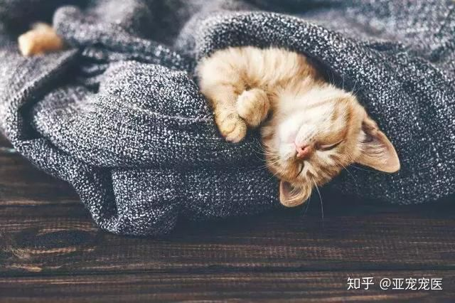
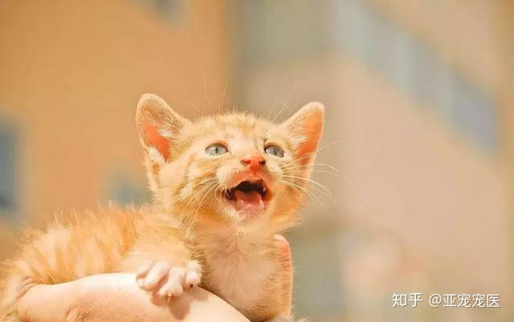

喵喵酱
www.miaomiaojiang.com

5个猫咪趣味小知识，你一定要知道！
各位亲爱的铲屎官，你是否好奇过，猫咪能否听得懂你说的指令？它们也像人类一样说梦话吗？它们彼此问候的方式又是什么样的呢？今天要来跟大家分享5个关于猫咪的小知识，喜欢猫咪的千万别错过哦~
1.猫咪是可以听懂人类语言的，因为有的猫咪会记住自己的名字，甚至能听懂吃饭了等字眼。狗狗大概可以听懂80种人类语言，猫咪的智商跟狗同等级，专家推测猫咪应该也能听懂相同程度的人类语言。比方说要喂猫咪吃饭，你说开饭了，它就会出现。如果你生气时，对它说你这家伙，它就知道“你这家伙”代表主人生气了。会赶快逃离犯罪现场。猫咪除了住自己的名字，也会记住家人的名字，当主人家人之间称呼彼此名字时，猫咪也会记住每个人的称呼。
2.猫咪和人一样，也会说梦话。据说成猫一天的睡眠时间超过十四个小时，小猫则可以睡超过二十个小时。熟睡到怎么叫也不会醒的时间有三个小时左右。其余时间都处在只有身体在熟睡的状态，大脑却清醒的雷姆睡眠时间带。因为大脑清醒，所以会做梦。这个时候就会说梦话。猫咪会呜呜叫或是呜啊叫，有时候嘴巴也会嗯嗯地动着。可能正在做打架或是吃到美食的梦吧~

3.猫咪问候的方式是亲鼻子，猫咪遇到关系亲密的猫同伴的时候，会彼此鼻子碰鼻子打招呼，这是猫咪之间的问候方式，为了确认彼此的气味，还会闻一闻对方口腔的味道。当主人伸出食指，猫咪会用鼻子碰手指，就是因为这个问候习惯。猫咪对于像猫鼻子的物体，总会反射性地用鼻子去触碰。
4.猫咪能够以人类听不见的高周波数（超声波）发声。通常是刚出生没多久的小猫会这么叫。小猫跟母猫失散的时候，小猫会发出叫声，通知母猫自己处于危险状态。超音波叫声，猫咪能清楚听到，母猫会立刻察觉状况，援助小猫。超音波叫声是小猫遇到紧急情况所使用的报警器！当猫咪对你这么叫的时候，表示它把你当成了它的妈妈，只不过你听不到声音而已，这时候你只需要好好的疼爱它就可以了~

5.猫咪的打架原则：打架是非常消耗体力的一件事情，还有受伤的危险。聪明的猫咪不会随便打架，它们会尽量避免无端的争吵，如果发现陌生的猫咪，会装作没看见，然后走开，绝对不会四目交接。可是到了发情期，公猫们会为了求偶打架，猫咪通常在对峙阶段就能够从体格或气势上分出胜负。如果互不相让，战斗的嚎叫就响起了，不过只要对方认输就不会再出手攻击了，是不是很有原则呢~
- 版权所属:
- 北京梦寻网络科技有限公司 |
- Beijing DreamLand tech CO. |
- 2026-2031